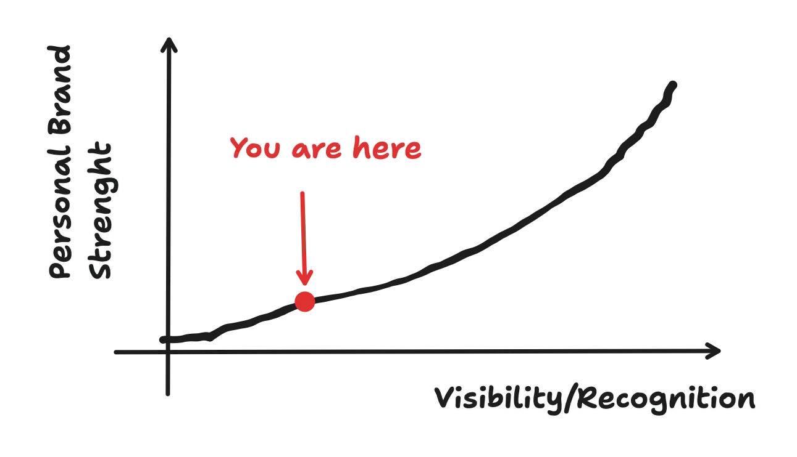
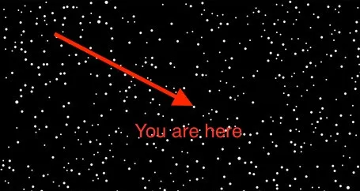
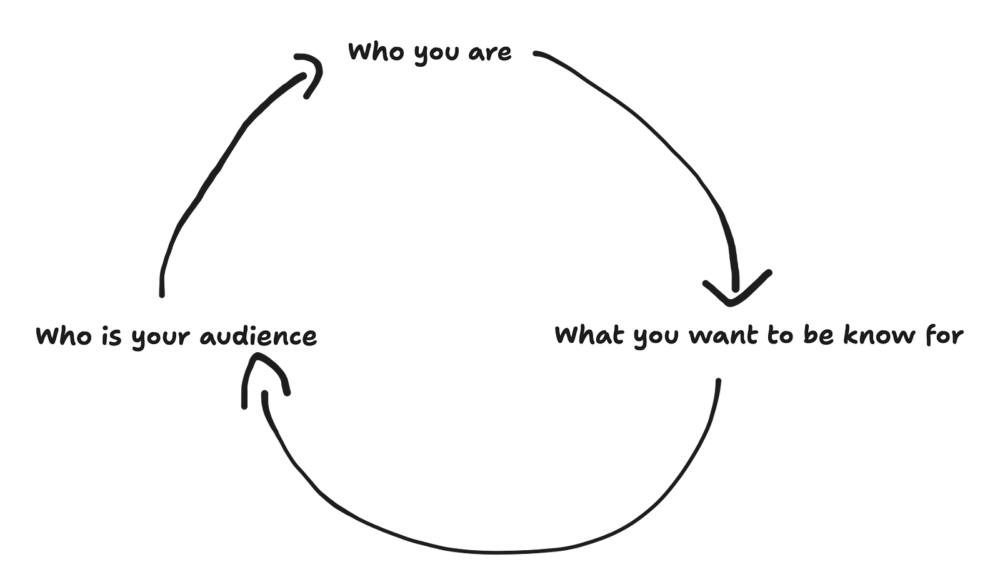

When you hear the word brand, you probably think about Coca-Cola, Nike, Microsoft, Apple, Gucci, Google and so on. These companies spend millions and millions of dollars perfecting their brand identities. The objective for this is simple. The next time you see their brand, they want to transmit to you their values. They want to transmit to you who they are, what they are and what they do. And they want you to talk about them with the values that they passed on to you when they are not around.
We don't even need to use companies as an example. We can use single individuals. Look at football players. Look at Ronaldo. Ronaldo created a huge personal brand that is well known everywhere around the globe. If someone mentions the word "Ronaldo", you instantly know who he is and what he does.
I'm not saying that you should become as famous as Ronaldo. But you should at least try to be known for what you are worth for.
Put Yourself out There
You need to remember that you are competing with remote work. This means that you are competing with an estimated 26.9 million software engineers. (source).
That's a lot of engineers.
You need to stand out. There is no other way around. It's a must at this point. If you want to get those six-figure jobs, you need to stand out and have incredible technical and soft skills.

Why You Need to Promote Yourself
Let's face it. Most engineers are terrible at marketing themselves. Their energy is spent solving engineering problems, and that's what they are good at. But this doesn't mean that you should ignore what people say about you when you are not in the room.
If people understand a bit better about who you are this will lead to:
More leads that gives you more chances to sell
More opportunities in your inbox
More interviews for you to prepare for
I saw the following quote somewhere, which summarizes it pretty well:
"Your brand is the key that unlocks doors that you can’t see."
Treat Yourself as a Business
If a personal brand is something that still doesn't make sense to you, think yourself like a business.
People need to see what your business can offer and what it is good at. People need to see the work that your business has already done and what a partnership with your business will give them.
If you think of yourself as a business, you will want to invest in your business. You will want to invest in you.
This means that your business will grow. You will grow.
Showing What You are Worth is not Cringe
Don't think of it as cringe. You might think that you are "selling" yourself and your dignity. But you are not. You are just showing to the world what you do and what your values are. Of course, if you try to sell something you are not, you are going to have a bad time.
See it as a strategy for your business. If you want your business to succeed in the long term, you need a brand. This brand will evolve over time. But you need a brand for your business.
In the end, you will want people to talk about your business when you are not around. And people want to be associated with your business. With you.
Before creating your Brand
I know that this is an Engineering newsletter, and I should give you practical straight forward bullet points, but for you to begin creating your personal brand you need to figure some things first by yourself:
Figure out Who you are.
When you know Who you are, figure out What you want to be known for
Who is your audience? Who should you target?

Don't think that this is a one-way stop. This will be a continuous cycle until the end of your career. Like most businesses evolve through time, so should you.
You will want to meditate from time to time if you are going in the right direction for you. If your values remain the same.
If they don't, approach this as a new opportunity to learn new things and to grow your business.
Start With the Basics
You don't need to start a huge portfolio website with the latest tech and shiny visuals or do 50+ Side Projects on GitHub to show your worth. Just start with LinkedIn.
In recent months, my experience on LinkedIn has significantly contributed to my growth as an Engineer, beyond just accumulating followers or likes. The platform has provided numerous valuable opportunities:
Networking: You will connect with a multitude of professionals who will share their ideas with you.
Communication skills: My ability to articulate ideas has improved across all areas of my life, including my professional role.
Opportunities: New leads have come to me because I met someone in person for a few hours and then we stayed in contact through LinkedIn.
Interviews: Recruiters will pick you if you have a solid profile that checks all their points.
How to start on LinkedIn
I don't like to reinvent the wheel. So, instead of creating a guide of my own, I will point you towards an article that helped me get my shit together on LinkedIn and also create this article.
Engineer's Guide to LinkedIn by Nicola Ballotta
The guide will get you started on how to create a solid LinkedIn Profile to increase your Personal Brand.
Just Keep Showing your Value
I know a lot of great people who have a lot of hidden potential. The problem with these people is that they don't show their work enough times to be distinguished from the others. This could hurt them in the long term, and I want to help those people.
That's why I think a Personal Brand is a must these days. Remember, invest in your business. Invest in yourself.
Just continue to show your value, and unknown doors will open to you.
Until Next Time 😎
Got thoughts? Questions? Just want to say hi? I'm all ears! You can find me on the professional network (LinkedIn) or the digital playground (X).
I'm always up for a chat and promise to get back to everyone. After all, the best part of writing is the conversations it starts.